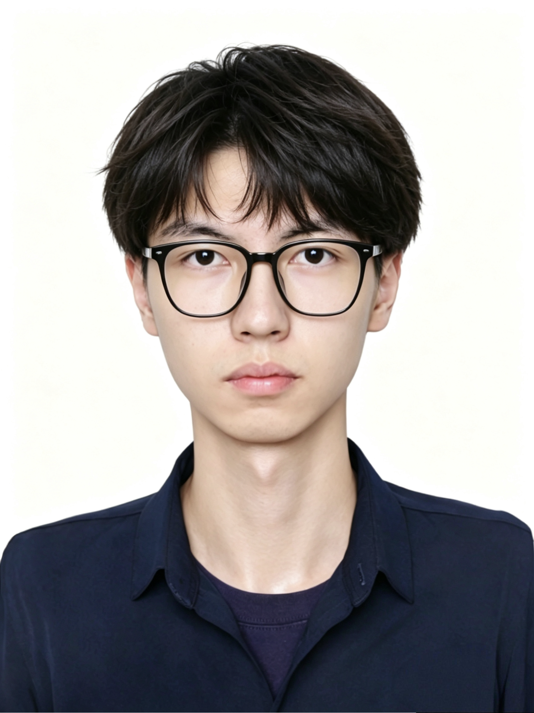

BE Student
School of Information and Intelligent Science, Donghua University, Shanghai
Scientific Machine Learning: graph neural networks and generative models for scientific simulation, prediction, and design.
Multi-Agent Learning: decentralized representation learning, cooperative decision-making, game-theoretic learning, and coordination.
Multimodal and Efficient Learning: multimodal representations, vision-language models, and resource-efficient deep learning.
Donghua University
Zilin Li (first author), Decentralized Coupled Representation Learning, accepted at NeurIPS 2026.
Zilin Li (first author), PIERCE: Triadic Bayesian Reasoning for Establishing Epistemic Boundaries, accepted at the EIML Workshop at ICML 2026.
Ge Zhang — Lecturer, Donghua University